In Script Library, choose the intended
scope/language, New Project, enter an ID/name and
Save. Open Workspace opens its real
entrypoint. The project file tree navigates the project. The
Project menu opens/adds files, renames or moves paths,
removes non-entrypoint files and selects the main entrypoint. Source
subfolders are supported. Python projects import admitted
helpers/packages; Octave helper functions use their actual matching
.m filenames.
Each file has its own source buffer, dirty star, Undo/Redo, caret, scroll and Find. The primary menu is File / Edit / Project / View / Run / Help. Use the Project menu for project file operations; the file tree navigates sources. F10 focuses the primary menu row; Left/Right choose a menu and Space/Down open it. Alt+F/E/P/V/R/H open File/Edit/Project/View/Run/Help directly. Escape returns to the source. The same arrows navigate adjacent open primary menus. File → Save saves the active Script or its complete Project transaction; File → Save All (Ctrl+Shift+S) saves every writable dirty Script/Project. Separate Scripts remain independent records, and a stale source or metadata revision refuses saving while preserving unsaved buffers.
Click the × at the right of a source tab to close that exact file, including an inactive tab. Dirty sources offer Save / Don’t Save / Cancel. Cancel preserves the original active file and focus. File → Close tab (Ctrl+W) closes the active tab; File → Close closes the Workspace. Closing the final source tab creates a fresh unsaved draft. No extra toolbar or source selector is needed.
Ctrl+Tab/Ctrl+Shift+Tab cycle all open files. When tabs exceed the available width, the tab strip’s … menu lists their complete qualified identities; Alt+Down on the notebook opens that same list. Selecting a hidden file brings its tab into view. Duplicate paths in separate Scripts show their distinct references. The project file tree remains available. On small screens or at large fonts, use View → Focus source / restore panes or hide optional side panes and script properties; these commands preserve their contents.
Assign to Session freezes every admitted source. Export writes one integrity-checked Project ZIP, including source and saved parameter/API metadata; Import Project ZIP creates a new reviewed identity. Run and Debug use the existing Runner/Job supervisor and freeze the entire tree again. Helper-file breakpoints and native stack navigation use physical file/line and the frozen whole-project SHA. Job details Open source files opens verified historical sources in read-only tabs, separate from today’s editable Registry record.
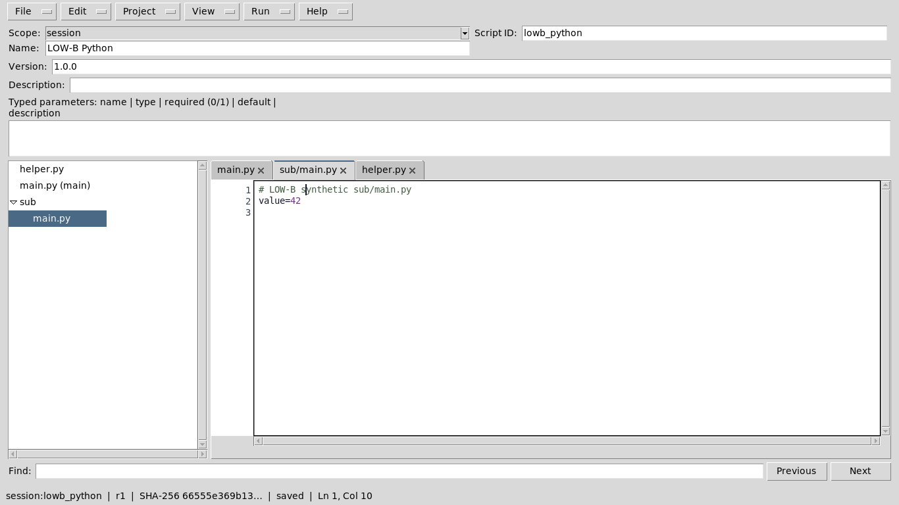
Declare typed parameters directly in source using literal arguments:
from gxtxt import gxtxt_parameter_declare, gxtxt_context
gxtxt_parameter_declare('gain', 'double', default=2.0, min=0.0,
description='Signal multiplier')
gain = gxtxt_context()['parameters']['gain']Saving inspects declarations without running imports or scientific source, including every admitted project helper. Distinct source and editor metadata names combine; conflicts and nonliteral declarations refuse saving. Change a source-declared definition in its source. The runtime declaration has no side effects and does not assign the effective value to a language variable.
The shared Runner always offers Add parameter, including an empty schema. Invocation-only rows have typed values, Edit and Remove, and do not change saved declarations. Optional Save parameters as Dataset / Load parameters preserves mixed definitions and exact typed values; loaded values remain editable before Run. No declaration or Dataset is required merely to add an invocation parameter. Source/revision, effective schema, origins and values remain in the immutable Job provenance.
See Project contract and source declaration contract for exact path, type, constraint, runtime and host API rules.
Open Viewers → Python Script Workspace with or
without a Session. Choose New, select User or Session
scope, enter a stable script ID, name, semantic version, description,
required APIs, and optional typed parameters, then edit the Python
source and Save. The Script Registry records revision
and SHA-256. Save As creates another ID. The editor has
line numbers, Python highlighting, undo/redo, search in both directions,
go to line, UTF-8 .py import/export, and public
gxtxt bridge help. Closing an unsaved edit prompts to save
or discard it.
Select a registered Python script in the left list to reopen it.
Run → Open Script Runner… opens the existing CORE
dialog with the exact registered identity, saved revision, SHA and typed
parameters; it does not submit a Job. Session scripts also appear in
Session Script Explorer and the analysis.python_script
selector; User scripts appear in Script Library and can be assigned to a
Session. Deletion uses the common resource lifecycle and refuses active
Analysis dependencies. Execution snapshots remain in the Session.
Python Script is a normal GX-TXT Analysis module for
researcher-authored scientific data processing. Create or import a
.py file in Python Script Workspace or Script Library,
assign it to a Session, select the session:<id> entry
in Analysis > Python Script, enable the module, and run it through
the normal Run page. Registered Session scripts retain their own source
snapshots; a later user-library edit does not change the Session copy.
Execution snapshots and provenance are under
analysis/scripts/ in the Session.
The configured runtime.python supplies Python and any
scientific libraries. The public gxtxt client discovers and
calls the same provider-owned public Script Bridge bindings as Octave.
Declare required APIs for preflight before scientific code runs. The
execution context includes a framework-owned output_dir;
completed files there can be published through
DATASET_FILE_PUBLICATION_API_v1. Use
PARALLEL_EXECUTION_API_v1/resources to bound worker
pools.
See the shared scripting guide, the client reference, and the parallel policy.
File, Edit, View, Run and Help share one compact menu row. Ctrl+A and Edit → Select All select the focused editable control, including multiline UTF-8 source and metadata. Ctrl+C/X/V keep that focus. Pasting over selected source replaces it as one local undo transaction; Ctrl+Z undoes it and Ctrl+Y redoes it. Selection and copying do not mark the document modified or write a Script Registry revision. Ctrl+S saves; Ctrl+F, F3/Shift+F3 and Ctrl+G retain find and go-to-line; Escape in Find returns to the source. Disabled line numbers and Bridge reference text are not editable.
Run → Open Script Runner opens the existing CORE Runner without submitting a Job. A dirty registered buffer prompts: Yes saves it and opens the Runner, No opens the last saved revision while retaining edits, and Cancel returns to editing. The Runner shows its actual scope, ID, version and SHA, and requires its own Run command to execute. A source changed elsewhere is explicitly identified; stale saves remain rejected. Run also opens the existing Script Library and Jobs Manager.
An unregistered buffer must first be saved. Obsolete Interactive Document Workspaces cannot be converted by these editors. Historical execution snapshots retain their identities. An editor bound to another or subsequently closed Session cannot perform Session-scope save, delete, register or Runner operations there: export any unsaved source if needed, close it, and reopen the workspace in the intended Session.
Layout · Breakpoints · Debugging · Worked examples
Open Viewers → Python Script Workspace even when no Session is open. New scripts default to User scope. Edit, import, export and Save work in the User library without creating a Session. Session registration, scientific execution and Debug require a real open Session. Use Script Library to assign a User script to that Session; this creates a distinct Session identity.
The menu row is File, Edit, View, Run, Help. Explorer selects registered scripts on the left; the editable source is central; public Bridge snippets remain on the right. View independently controls Explorer, Snippets, Debugger, Call Stack, Variables, Debugger Output and Breakpoints. Opening Debug adds a lower assistant; it preserves both side panes. Drag the horizontal and vertical splitters to allocate space. Closing Debug restores the source area. Five repeated open/close cycles do not require rebuilding the editor.
View → Focus source is reversible; Reset layout restores the default proportions. Pane visibility and splitters are presentation settings saved in the user’s configuration. View → Script properties collapses the other metadata rows. View → Parameters independently hides/restores the parameter declarations panel without changing its values, source or dirty state. This is useful with a 900 × 560 window and a large GUI font. Show script properties expands it again. Appearance font settings apply when GX-TXT starts; restart after saving a different GUI font size.
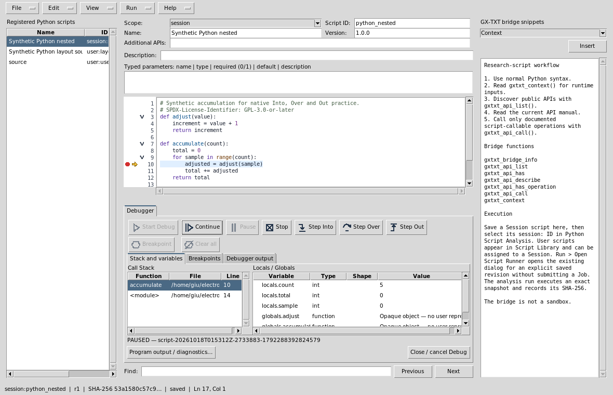
The narrow gutter has independent lanes for breakpoints, the current execution arrow and folding, followed by physical line numbers. A filled red dot is an enabled breakpoint; a hollow red dot is disabled. A yellow arrow marks the selected paused native frame. Small chevrons collapse a function or block; folding never edits the source. Clicking a fold chevron does not toggle a neighboring breakpoint. Digits widen as the file grows beyond 99, 999 or 9999 lines. Scrolling and folding retain physical line identities.
Click the breakpoint lane on an executable line. F9 toggles the current line; Ctrl+Shift+F9 clears all breakpoints. The gutter context menu and Breakpoints tab offer Enable, Disable, Remove and Clear all. Blank lines, comments and non-executable targets are refused. Breakpoints are associated with the exact source identity/SHA; editing invalidates their old positions. Set them again after editing. Breakpoint changes are locked during a managed Debug Job so the display cannot pretend that the running snapshot changed.
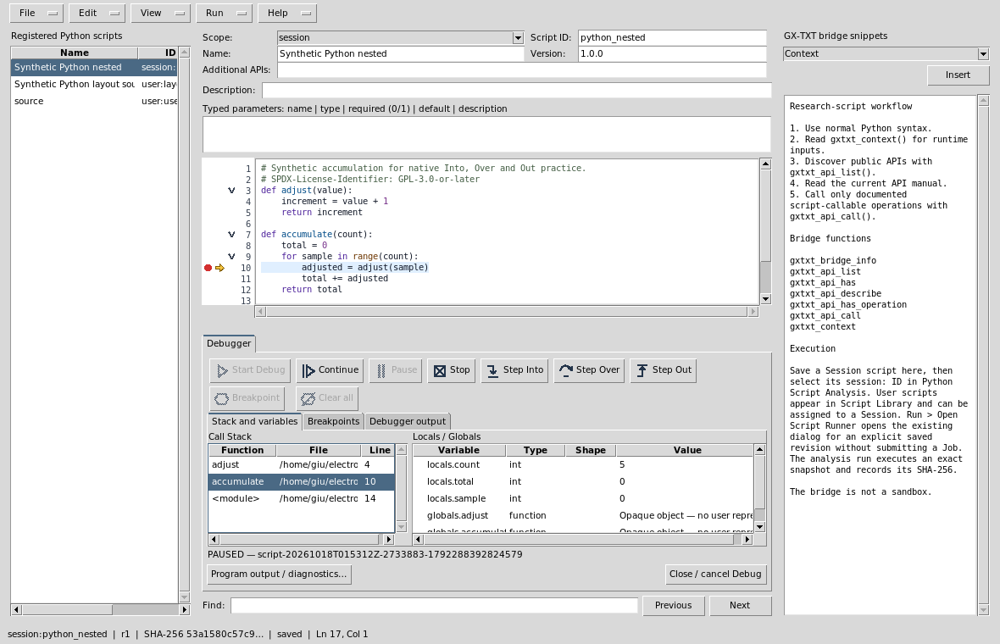
Toolbar icons have pointer and keyboard-focus tooltips. At narrow widths their labels collapse to icons; the functions remain available. Disabled buttons reflect actual Job state. Locals / Globals are bounded read-only summaries with type, shape and value; this is not an expression Watch or arbitrary eval. An external stack frame shows its actual path/line, with no misleading arrow in unrelated source. Folded current source is revealed for inspection.
Debugger output contains bounded native command/status receipts. Program output / diagnostics opens the ordinary Script Job details with stdout, stderr and immutable execution provenance. These are distinct streams.
Hiding Debug through View preserves its managed Job. Close / cancel Debug asks before cancelling an active Job; Cancel keeps it open. Closing the editor also protects unsaved edits and an active owned Job. A closed or changed Session blocks stale scientific operations; export an unsaved buffer before reopening in the intended Session. Debug refuses unsaved, unregistered or externally changed source. Editing while paused does not alter the running snapshot: source stepping controls are disabled until the saved identity agrees.
examples/debug_temperature.py uses only public
NUMERIC_API_v1 calls for conversion and reduction. Input
temperatures are 18, 20, 22, 21 and 19 °C. Add the exact
Celsius-to-kelvin offset 273.15 K. Expected output is 291.15, 293.15,
295.15, 294.15 and 292.15 K; mean 293.15 K. Declare
NUMERIC_API_v1@1:math.numeric in required APIs. Import the
example, save it as a Session script, and place a breakpoint on the
first output line after the reduction. Inspect celsius,
kelvin and average.
examples/debug_nested.py deliberately uses ordinary
language arithmetic for stepping practice. The five adjusted values are
1, 2, 3, 4 and 5; the final total is 15. Break on the call to
adjust, Step Into, inspect value, Step Out,
then Step Over the addition. Select the caller to compare its
sample and total. Continue to completion, then
run the saved script normally through Script Runner. No example
publishes a Dataset or modifies scientific source data.
Help → Viewer manual / Debugger guide… and
F1 open this independent rendered guide with embedded
real GUI images. Use Find / Find next, the section links and Back /
Forward. The manual remains available without a Session and after
closing the editor. Source example links are supplied in the module’s
examples/ folder; import them through File rather than
executing a documentation hyperlink.
If Start is disabled, read the IDLE explanation: check Session, Session scope, saved source and registered SHA. If panels seem missing, inspect View checkmarks and Reset layout. If values seem stale, compare the selected native frame and the Job source identity before interpreting them. Missing required APIs fail preflight; use the public API documentation rather than a private fallback.
The Workspace writes source independently of any scientific Session. A User script belongs to your Script Library; a Session script is a separate saved identity owned by the currently open Session. Assigning a User script to a Session snapshots its source and metadata. Editing the User copy later does not change the saved Session revision. A loose imported file is an editor buffer, not automatically a registered script or a runnable Job.
| Control | Operation and result |
|---|---|
| New / Ctrl+N | Protect unsaved work, then start an unregistered source buffer. Choose User scope when no Session is open. |
| Import .py / Ctrl+O | Open the native file chooser and load language source. Review it before Save. Import does not execute the file. |
| Save / Ctrl+S | Validate the language-specific metadata below, then save a Registry revision/SHA. An external revision change is refused; reopen before editing it. |
| Save As | Create a new Registry identity/copy while retaining the original. Check the resulting ID, scope and name before running it. |
| Export .py | Write the current source buffer through the native save chooser. This is source export, not a Registry assignment or result publication. |
| Delete | Delete the selected registered script through the common lifecycle. Active dependencies can prevent deletion. This does not delete an unrelated imported file or scientific Dataset. |
| Copy ID | Copy the exact registered reference for Runner/Analysis/Library use. Unsaved anonymous source has no execution identity. |
| Close | Protect unsaved source and confirm cancellation of an owned active Debug Job. Cancel returns to the editor. |
Source files use UTF-8. GX-TXT preserves imported source identity, BOM/newline information where represented by the source import/export contract; changing the text intentionally creates a new SHA. Do not infer equality from what is visible on screen: compare the saved source/Registry revision. Unsupported encodings, malformed source or invalid metadata require correction before execution. Export a copy before resolving a stale or changed-Session buffer.
The Python metadata panel contains Scope, Script ID, Name, Version,
Additional APIs, Description and Typed parameters. A stable ID is
separate from the display name; version describes the script,
revision/SHA identifies its saved source. Additional APIs use identities
such as NUMERIC_API_v1@1:math.numeric. Each nonblank
parameter line is
name | type | required (0/1) | default | description.
Registry validation owns supported types/defaults. Runner presents
parameters; the script reads them from gxtxt_context().
Metadata edits do not submit Jobs.
The left Registered scripts / Explorer list opens existing identities. The right GX-TXT Bridge Snippets selector and Insert button insert the chosen public client example at the editor insertion point. Review inserted code and requirements. Snippets are not hidden private APIs and do not execute on insert.
| Control / shortcut | Behavior |
|---|---|
| Undo Ctrl+Z / Redo Ctrl+Y | Local edit history for editable source/multiline Text controls; independent of scientific Session History. Single-line Entry fields have no Undo/Redo history and these commands are disabled when an Entry has focus. |
| Cut Ctrl+X / Copy Ctrl+C / Paste Ctrl+V / Select all Ctrl+A | Operate on the focused source or metadata control. Copying a read-only value does not mark source dirty. |
| Find Ctrl+F | Focus the source Find entry. Enter a literal search string. |
| Find next F3 / Find previous Shift+F3 | Search forward/backward using the same entry; the Previous/Next buttons provide identical directions. |
| Go to line Ctrl+G | Select a physical source line, including lines presently inside a fold. |
| Fold current / Fold all / Unfold all | Hide or reveal source presentation. Folding changes neither text nor scientific source identity. |
| F9 / Ctrl+Shift+F9 | Toggle the current executable breakpoint / clear all breakpoints while not locked by an active Debug Job. |
Manage imports opens the Python import assistant: review/add ordinary import declarations, preview the insertion/deduplication and explicitly Apply. Remove an import by editing the source; the assistant has no Remove control. It is a source-editing tool, not a package installer or dependency authorization.
The assistant’s Search entry filters its module-name/origin catalog. Select a catalog row or edit the import-statement entry, then Add choice stages that statement. Preview source changes displays the proposed insertion and deduplication in its read-only source pane; Apply explicitly edits the current buffer after the Session/interpreter guard. Review the resulting dirty source and Save through the Registry when intended. Cancel closes the assistant without applying a source change. The catalog is static availability information, not proof an import initializes successfully. Source organization neither runs the edited script nor installs or authorizes any package. Source removal is an ordinary manual edit; there is no assistant Remove operation.
Line numbers are physical source lines. Separate gutter lanes hold a filled red enabled breakpoint, hollow disabled breakpoint, yellow native-frame arrow and fold chevrons. Use the gutter context menu or Breakpoints panel to Enable/Disable/Remove/Clear. Blank, comment and unsupported executable targets are rejected. A source edit invalidates previous revision-bound breakpoints; set them on the new source. Appearance uses shared Source Surface themes and configuration; highlighting, selection, scroll and fold never rewrite source.
| View item | Effect |
|---|---|
| Script Explorer / Registered scripts | Independently show or hide the saved-script list. |
| GX-TXT Bridge Snippets | Independently show or hide the public client assistant. |
| Debugger | Show/hide its assistant; hiding retains the managed active Job. |
| Call Stack | Show actual native frames; select one to inspect that frame’s line/locals without changing program execution. |
| Variables / Locals | Bounded typed values/shapes for the selected native frame. This is not an arbitrary expression Watch/eval console. |
| Debug Output / Console | Native debugger status/command receipts; separate from program stdout. |
| Breakpoints | Show saved line, enablement, function, source and exact revision information. |
| Focus source / restore panes | Temporarily prioritize source, then restore the previous side panes. |
| Reset editor layout | Restore the standard visible panes/proportions. |
| Script properties | Collapse/restore other metadata without changing field values. |
| Parameters | Independently hide/show declarations without changing values, source or debugger state. |
Drag horizontal/vertical splitter sashes to size panels. Visibility and proportions are user presentation preferences. Reopen to restore them; use Reset if a pane became too small. Font-size changes follow the framework’s restart policy. Narrow windows retain the compact menu row; debugger buttons may show icons with tooltips. Keyboard Tab/Shift+Tab moves focus, and Space/Return invokes the focused enabled native control.
Run → Open Script Runner opens the ordinary reviewed execution dialog for the saved identity; opening it does not run source. Check parameters, source SHA, input/output request and required APIs, then use Runner’s own Run action. The Script Library organizes User scripts and assignments; Script Jobs Manager tracks actual durable Jobs/logs and cancellation. A lost Viewer window does not convert a completed Job into an unsaved execution. This ordinary Runner submits a local Script Job and has no destination selector. Registered remote destinations belong to the separate Scientific Execution workflow; opening an ordinary Runner is not remote execution evidence.
Debug Session script needs an open Session and clean saved Session source. Start Debug creates the actual native interpreter Debug Job. Continue resumes; Step Into enters a called language function, Step Over completes the current statement without entering it, and Step Out returns to a caller. The current source arrow and selected stack frame can differ from the program’s top execution frame after inspection. Pause is real native Python tracing; GNU Octave asynchronous Pause remains unsupported and is visibly disabled. Stop requests owned-Job cancellation. Breakpoint toggles the current source line; Clear all removes editable breakpoints before a new run.
The script Workspaces do not bind F5/F10/F11 to stepping: use their actual named toolbar controls (keyboard Tab/Space is supported). F1 opens this manual; F3/Shift+F3 search and F9 manipulates breakpoints. C++ Workspace shortcuts belong to its separate manual; do not assume they apply to a language interpreter.
At a native pause inspect bounded locals/globals, types, shapes, function and physical file/line. A not-yet-assigned local can be unavailable; external frames are shown truthfully rather than highlighted in unrelated source. Output panels allow selection/copy of their displayed bounded text. Program output / diagnostics opens ordinary Job details with stdout/stderr/provenance; Debug Output is the control log. Truncated summaries are not complete arrays or full program output. Read the actual Job logs when diagnosing failures.
Session switch/close, changed Registry source, unsaved source or stale debug snapshot blocks unsafe stepping or Session operations. Export unsaved source, select/reopen the intended Session identity, and start a fresh Debug Job. Use Jobs Manager to inspect durable status after reconnect; do not resubmit a Job merely because its old window closed. Failed API requirements are errors to resolve through installed public documentation, never a private fallback.
Script Bridge help explains public client discovery and execution context. Viewer manual / Debugger guide / F1 opens the integrated searchable manual with Back/Forward, local figures and full-size screenshot links. About calls the common Documentation Browser About owner, showing the current installed module/provider/version/license/API references read from its descriptor. The publishing-only WordPress article is delivered separately from the runtime.
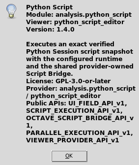
temperature_reference as ID, an explanatory name/version,
and Additional APIs NUMERIC_API_v1@1:math.numeric. Copy the
complete public CORE example below and Save..py copy. Reopen its registered User
identity from Explorer and check the unchanged source/metadata. Use
Script Library to assign it to a new synthetic Session; choose the
resulting session: identity.celsius,
kelvin and average, step and Continue. Compare
debugger values with the normal Job’s output, then Stop or finish.
Save/close/reopen and verify the same registered revision remains..log file. These actions operate
on execution output, not the editor’s source code. Compare the saved
stdout with the Debug Job’s stdout; both contain the five kelvin values
and mean.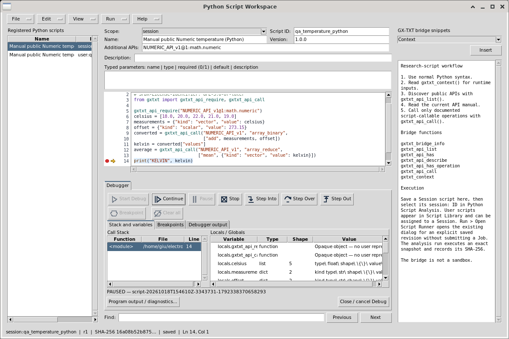
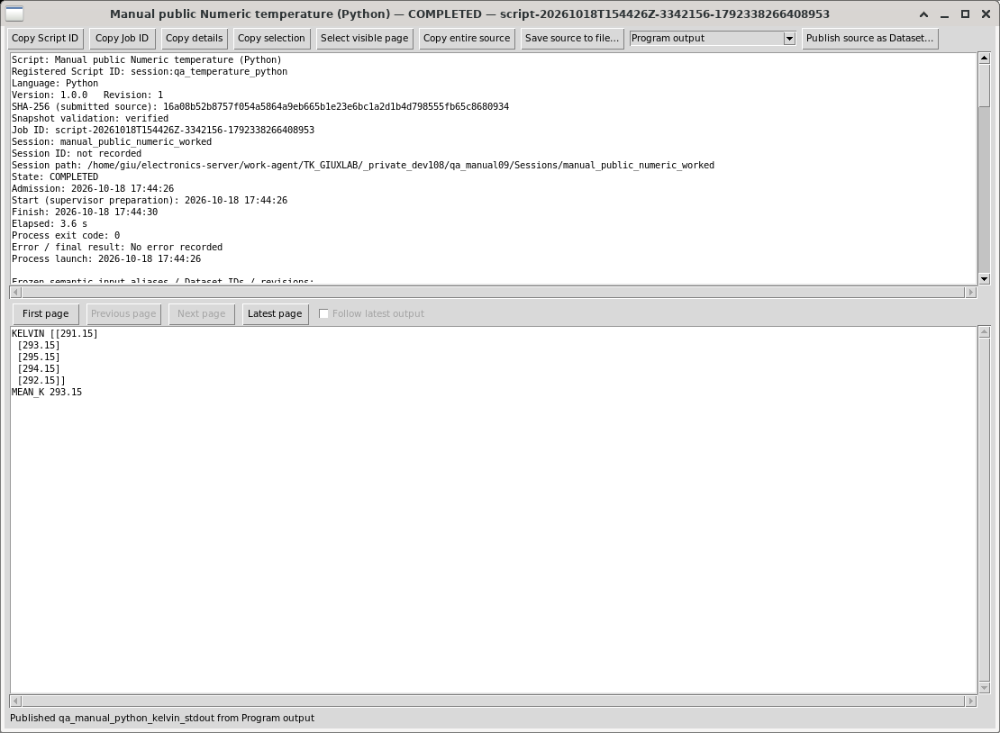
# Synthetic temperature measurements; no Dataset is published.
# SPDX-License-Identifier: GPL-3.0-or-later
from gxtxt import gxtxt_api_require, gxtxt_api_call
gxtxt_api_require("NUMERIC_API_v1@1:math.numeric")
celsius = [18.0, 20.0, 22.0, 21.0, 19.0]
measurements = {"kind": "vector", "value": celsius}
offset = {"kind": "scalar", "value": 273.15}
converted = gxtxt_api_call("NUMERIC_API_v1", "array_binary",
["add", measurements, offset])
kelvin = converted["values"]
average = gxtxt_api_call("NUMERIC_API_v1", "array_reduce",
["mean", {"kind": "vector", "value": kelvin}])
print("KELVIN", kelvin)
print("MEAN_K", average["values"])If Import or Export fails, check the chosen path/encoding/permissions and retain the current buffer. If Save fails, correct the precise Registry metadata error. If Debug Start is disabled, check Session scope, clean saved source and immutable revision. If Stop is pending, inspect the owned Job instead of assuming it has already ended. If a pane is lost, restore its View checkmark/Reset layout. A visible error or an untested remote endpoint is never a successful remote run.
Open Run → Open Script Runner for the saved identity. Check its revision/SHA, named parameter values and any saved default argument text. Review typed invocation values and saved inert argument text. Each Add input Dataset row has its own Namespace and Dataset ID selectors, a unique semantic alias and optional display label. Namespace changes clear only that row; Session Current and other rows stay unchanged. Selection captures the Dataset revision; changed or moved inputs require explicit reselection. Remove input removes only that request. Parameter-only scripts need no Dataset.
Parameter Dataset accepts a canonical preset ID in this Session. Save parameters as Dataset creates a new typed canonical Dataset; Load parameters checks Script/schema/source/revision and payload integrity before applying all values. Numeric, string, boolean and choice types and stable Variable IDs are preserved. Loaded values remain editable. Neither action changes Registry metadata or executes a Job. A changed preset or Script requires fresh review.
Output request declares an optional ID/label and deliberate owned replacement. Publication defaults to the script producer’s private namespace; input namespaces grant no write rights. Only an actual Publication commit creates output. Validate review checks without execution; Run Job submits the immutable Script/input/parameter snapshot. Close dismisses review and does not cancel an admitted Job. The actions/status remain visible while the form scrolls; Tab/Shift+Tab reaches fields, Ctrl+Return submits and Escape closes review. Script Jobs reports actual completion, cancellation and committed outputs.
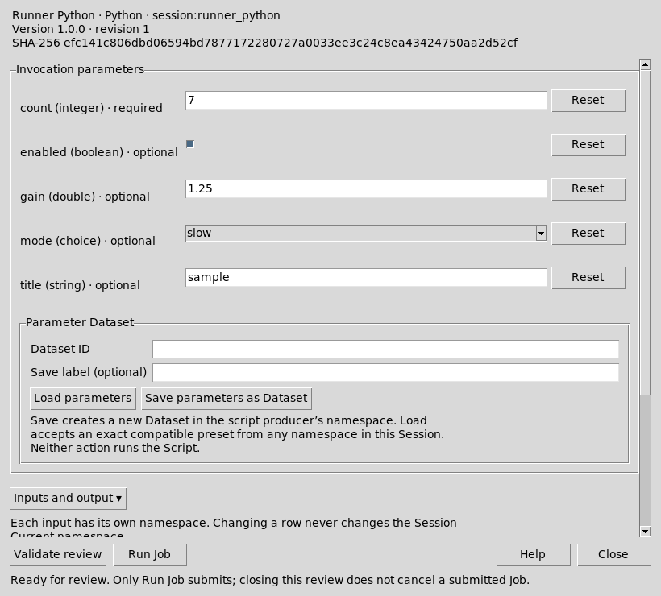
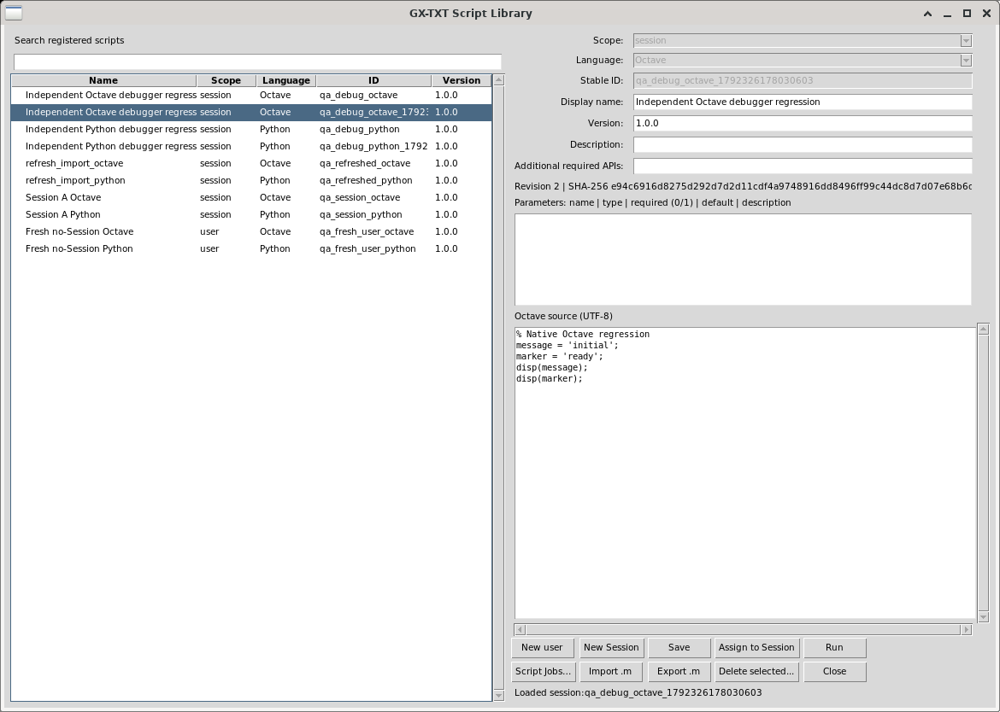
Script Library lists stable User/Session identities. Select the intended row before changing metadata, assigning/copying to a Session, opening an editor or Runner, or removing an entry. Assignment creates a separate Session copy; keep the original User identity for reusable source. Saving a Session copy does not modify the User record. Library parameters and API requirements are canonical metadata, not text added invisibly to researcher source.
The Jobs Manager exposes these ordinary menus and controls:
| Menu | Operation |
|---|---|
| Jobs | Refresh/reconnect durable records; open execution details; cancel selected running Jobs; recover interrupted state through the existing owner; rerun only after explicit review. Rerun creates a new Job with the current registered source and reviewed inputs, preserving the historical execution. |
| History | Hide finished selected executions; restore selected hidden executions; Include hidden makes reversible hidden rows visible. Hiding changes the user’s presentation, not scripts, logs, Datasets or output files. |
| View | Choose all/current/specific Session scope, filters, previous/next page and visible columns. Each page contains at most500 Jobs; counts cover full stored history. |
| Workspace | New/Open/Save/Save As or Duplicate/Rename/Manager/Close save and restore this Manager’s filters, scope and layout. They do not change Job state, scripts, logs, outputs or resource policy. |
| Settings | Concurrency and resource policy opens the existing shared admission controls below. |
| Help | History and Workspace help explains reversible hiding and presentation-only Workspaces. |
Double-click an execution for details. Read actual source/Job identity, runtime, stdout/stderr, resource usage, diagnostics and committed publications. A bounded preview can be incomplete: open its full log/details before drawing conclusions. Cancellation is asynchronous; wait for terminal state and cleanup. Reconnect reads the same durable Job instead of submitting a replacement.
The upper pane shows exact execution identity, source revision, runtime, parameters, input bindings, resource policy/usage, diagnostics and committed publication IDs. The lower pane displays the selected execution stream. Here source means that output stream, not the editor’s script source.
| Control | Actual behavior |
|---|---|
| Copy Script ID / Copy Job ID | Copy the registered script reference or this exact durable execution ID. |
| Copy details | Copy the complete displayed upper execution-details text. |
| Copy selection | Copy selected text from the focused details/log pane. Native Ctrl+C and the text context menu also copy selections. |
| Select visible page | Select only the current lower log page; it also suspends output following. |
| Copy entire source | Read the selected stream across pages into the clipboard, up to32MiB. Use Save for a larger stream. |
| Save source to file… | Choose a normal destination and atomically export the selected complete retained stream. It does not save or alter the script. |
| Program output | Select stdout from this exact execution. |
| Program stderr | Select the separate stderr stream when available. |
| Diagnostic log | Select trusted execution/runtime diagnostics. |
| Legacy combined stream | Read an older execution’s combined log; unavailable streams have explicit diagnostics. |
| First / Previous / Next / Latest page | Navigate64KiB byte pages; status shows the actual byte range and total. Disabled Previous/Next indicates a boundary. |
| Follow latest output | Follow new output in an active execution; pointer selection, manual scrolling/navigation suspend following so selected text remains stable. |
| Publish source as Dataset… | Review a new Dataset ID, then explicitly publish the selected stream as a canonical TEXT Dataset with original execution provenance. It creates no typed numerical columns. |
| Close | Close this inspection window and its owned readers/transfers; the durable Job and retained output remain available in Jobs Manager. |
Copy/save use the original stream identity; replacement or shrinkage interrupts transfer with a useful error. A stopped transfer is not a complete export. The visible64KiB page is a bounded view, while complete-stream transfer reads the retained output through the existing Job owner. Closing and reopening details does not submit an execution. Splitter positions affect presentation only.
Settings → Concurrency and resource policy has seven requested limits: Concurrent jobs, Admission limit (active + queued), Threads per job, Memory per job (MiB), Temporary disk per job (MiB), Processes per job and Time per job (seconds). Review effective detected limits; save only an intentional policy. These settings apply to newly admitted Jobs and do not retroactively change a running execution. Queued Jobs, owned children and supervisor enforcement remain the existing CORE execution services.
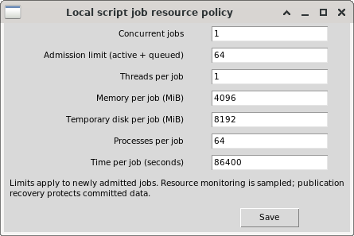
New and Import record the current Session lifetime. A Session-scoped buffer from A cannot Save, Save copy, Delete or Run into B. Returning to A’s same path creates a new lifetime and still refuses that old buffer. First Export the unsaved source if needed, then open the intended Session and New/Import or reopen its registered identity from the refreshed list. Review metadata/scope and Save a current revision. Choosing a different scope on a stale anonymous buffer is not implicit adoption into another Session. User-scoped authoring remains independent of a Session.
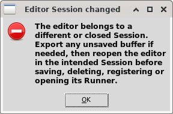
Normal Debug completion is COMPLETED; an explicit Stop is CANCELLED; interpreter/source errors are FAILED. The Python and Octave native debug adapters have a600-second inspection lease; expiry/Job supervision may stop an execution. Read the actual terminal state and diagnostic, rather than assuming every failure means a time limit. Stack, locals and current-line arrow clear after terminal completion/cancellation. Debugger control output and program stdout/stderr are different views. Close or source/Session changes require the owner’s cancellation/stale checks before another run.
Use the primary Edit → Edit Notes command for the selected source file. View → Show Notes hides or shows the same adjacent note page; it retains the draft and its Undo/search state. Notes use the shared Markdown editor with Source, Rendered, Outline, Properties and Resources views. Insert images through its existing image command. Source and Rendered have independent selection and copy. Find and Focus Source act on the selected note. Python/Octave temporarily give Notes the source region and restore the prior code panels when returning to code.
Explicit Save publishes the note as a canonical Markdown Dataset in the current Session. Without a Session, Save retains an explicit local note; attach it when a Session is available. Save All and portable Project export preserve per-file notes and their PNG resources through the existing source-owner snapshot. Save As/Save Copy create fresh source/note identities and preserve the original. Notes do not change source code, build inputs or scientific execution hashes. If another editor changes the source or note, saving refuses and retains the draft; review the current revision or use Publish New to preserve a separate copy.
Opening an associated note from the Dataset Browser returns to that exact file’s Notes page when its source remains available. Otherwise Documents opens the same canonical Dataset. Associated Source is read-only and shows only the exact matching source, with an explicit diagnostic if it has changed or disappeared.
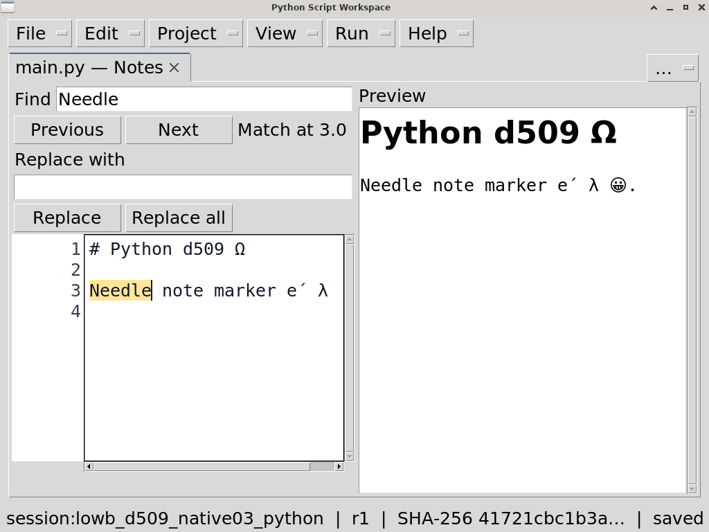
Python per-file Notes with Source, Rendered and the primary menus at font18.
Formatting is in Edit → Note format, including headings, emphasis, code, lists, tables, links, quotes, rules and text color. Edit → Note images opens the shared PNG chooser and provides Replace/Remove for the selected managed resource. View → Note panes and zoom controls Source, Rendered preview, Outline, Properties and Resources independently, with zoom and layout reset. These groups act on the currently selected note and are unavailable on code pages. Portable images remain read-only until explicit Session attachment.